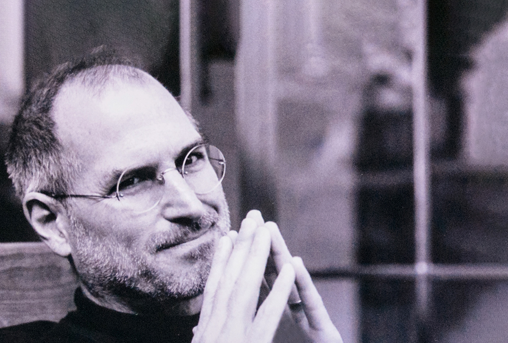

Bill Gates

Bill Gates é um empresário e programador norte-americano, nascido em 28 de outubro de 1955. Ele é um dos fundadores da Microsoft, empresa criada em 1975 junto com Paul Allen. Gates contribuiu para a popularização dos computadores pessoais por meio do desenvolvimento de softwares. Além disso, dedica-se a projetos sociais nas áreas da saúde, educação e combate à pobreza.
Steve Jobs

Steve Jobs foi um empresário e inventor norte-americano, nascido em 24 de fevereiro de 1955. Ele foi um dos fundadores da Apple, em 1976, junto com Steve Wozniak e Ronald Wayne. Jobs ficou conhecido por contribuir para a criação de produtos inovadores, como o Macintosh, o iPod, o iPhone e o iPad. Ele faleceu em 5 de outubro de 2011, deixando um importante legado para a tecnologia.
Linus Torvalds
Linus Torvalds é um engenheiro de software e programador finlandês, nascido em 28 de dezembro de 1969. Ele é conhecido por criar o núcleo do sistema operacional Linux em 1991, utilizado em servidores, computadores e diversos dispositivos. Também desenvolveu o Git, uma ferramenta utilizada por programadores para controlar as alterações em projetos de software. Suas contribuições foram muito importantes para o desenvolvimento da informática e dos programas de código aberto.